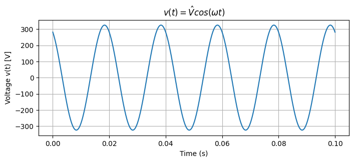
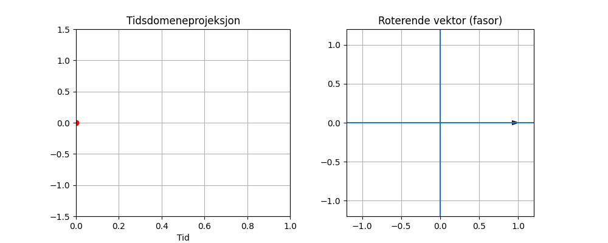
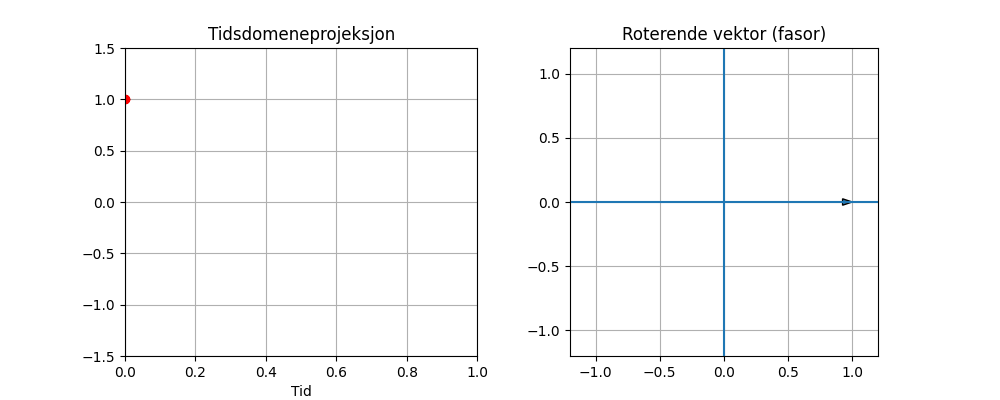
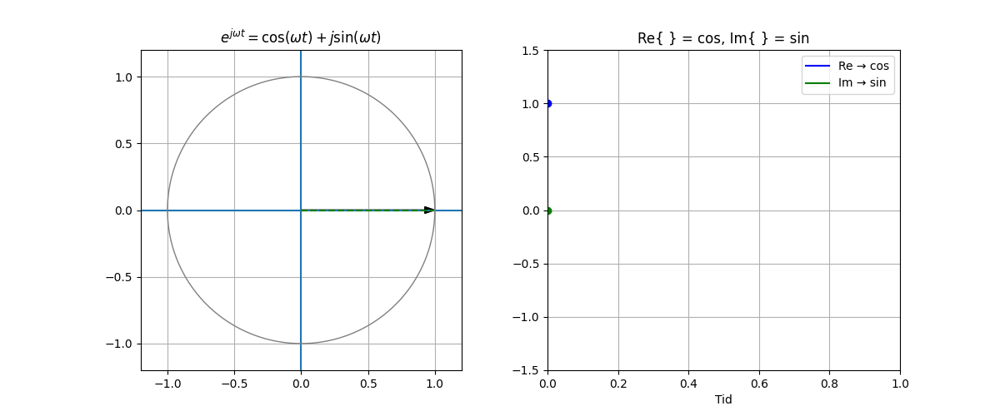
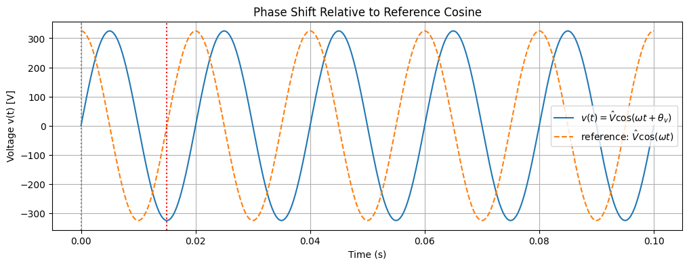
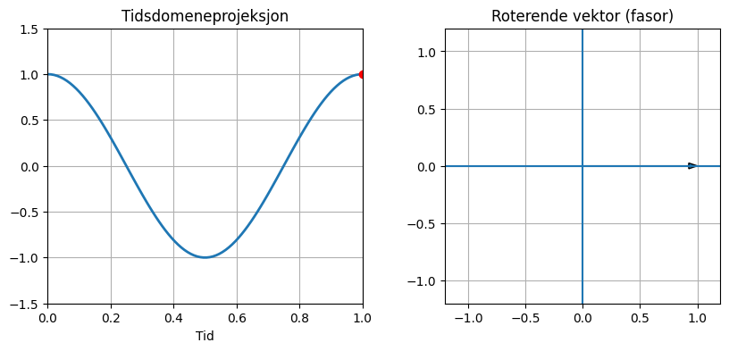
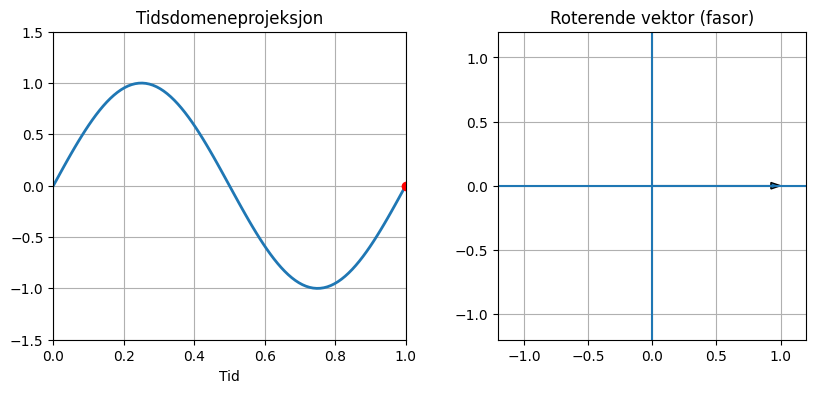
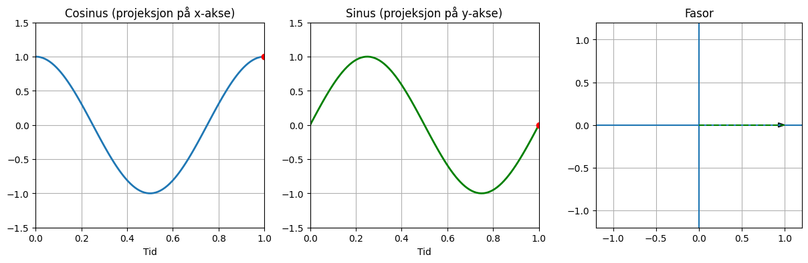
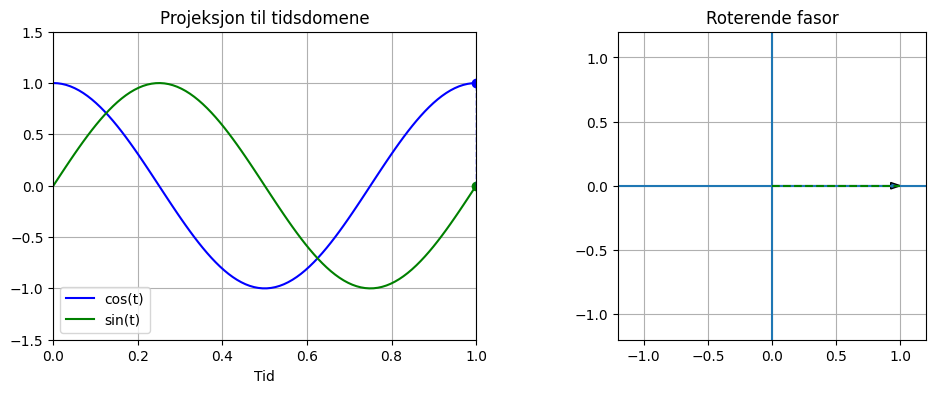
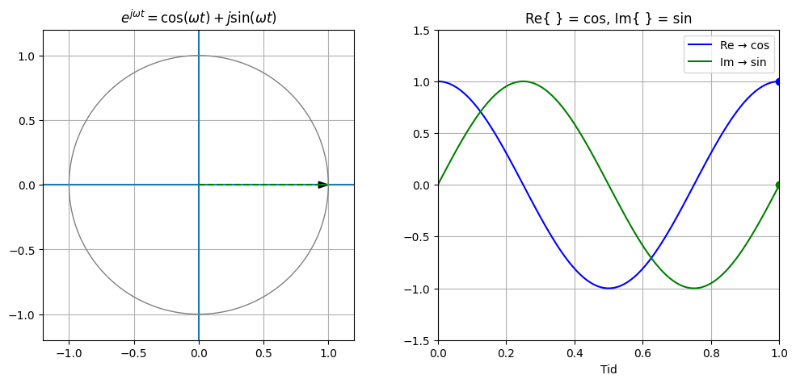

Stabilitet#
For å forstå stabilitet i dynamiske kraftnett må vi definere tidsaspektet. Hittil har vi jobbet med tiddserier og tidsserieanalyse, for å modellere kraftnettet. Vi skal nå bevege oss inn på transient-, spenning- og frekvensstabilitet.
Vi starter med den generiske sinusoide funksjonen og husker Eulers formel: \(e^{j\theta}=cos\theta+jsin\theta\).
I denne boken bruker vi MKS-enheter og IEEE-standarder så langt det lar seg gjøre Meter–Kilogram–Sekund (MKS) systemet er et enhetssystem der de grunnleggende måleenhetene er:
Lengde: meter (m)
Masse: kilogram (kg)
Tid: sekund (s)
MKS betyr at vi bygger alle fysiske størrelser fra meter, kilogram og sekund – og det er grunnlaget for SI-enhetene vi bruker i kraftsystemer.
Alle fysiske størrelser i kraftsystemer er egentlig i SI-enheter (MKS-basert):
Spenning: Volt Strøm: Ampere Effekt: Watt Impedans: Ohm
Per enhet normaliserer MKS-verdier ved å dividere med en valgt baseverdi, for å skape dimensjonsløse tall uten enheter
Baser#
Fra basene \(S_{base}(VA)\) og \(V_{base}(Volt)\) kan vi utlede: $\(I_{base} = \frac{S_{base}}{\sqrt{3}V_{base}}\)\( \)\(Z_{base} = \frac{V^2_{base}}{S_{base}}\)$
Tidsdomene og fasor#
Tidsdomenerepresentasjon for spenning kan beskrives som: \(v(t)=\hat{V} \cdot cos(\omega t)\)
Små bokstaver (v) brukes til å representere instansverdier som varierer som funksjon av tiden (t).
Mens stor bokstav (V) er konstant.
Representasjon av tiden og konstanter er ikke standardisert som ved (MKS, SI og IEEE), men et produkt av konvensjoner; hva man over tid har blitt enige om å uttrykke noe på. Dette er også en god beskrivelse av forskjellen på standarder og konvensjoner.
Der \(\hat{V}\) er spenningens amplitude, frekvensen (f) er 50 Hz (50 svingninger i sekundet).
I python-scriptet under er V_ampl den konstante spenningen mens v forandrer seg med tid (t)
import numpy as np
import matplotlib.pyplot as plt
# Parameters
V_ampl = 325 # Peak voltage [V]
f = 50 # Frequency [Hz]
omega = 2*np.pi*f # Angular frequency
theta_v = np.pi/6 # Phase angle (30 degrees)
# Time vector
t = np.linspace(0, 0.1, 1000)
# Voltage signal
v = V_ampl * np.cos(omega * t + theta_v)
# Plot
plt.figure(figsize=(8, 3))
plt.plot(t, v)
plt.xlabel("Time (s)")
plt.ylabel("Voltage v(t) [V]")
plt.title(r"$v(t) = \hat{V} cos(ωt)$")
plt.grid()
plt.show()

I kraftsystemer beskriver man ofte cos(\(\omega t\)), fordi dette viser projeksjonen av spenningen v, i cosinusplanet og gir verdien 1 der v(t) = 0. Da er v(0) lik V den konstante, som er det samme som amplitudeverdien \(\hat{V}\). På denne måten beskriver cosinus systemet ved kontinuerlig drift som et steady-state perspektiv. Steady-state perspektivet er også en viktig faktor når vektoren (V) roterer i tidsdomenet og blir en fasorrepresentasjon.
Tidsdomene (bølgeform) og roterende vektor (fasor)#
Fasorrepresentasjonen blir særlig aktuell ved faseforskyvning, nyttig for å vise faseforskyvning av spenning (som i trefasesystemer) eller strøm (på grunn av passive komponenter:

Vi bruker benevnelsen \(\bar{V}\) for å vise at det er et kompleks tall med en utstrekning (amplitude - \hat{V}) og fase (\(\theta\)). Utstrekningen er også magnituden eller absoluttverdien |V|, der fasen eller vinkelen er argumentet til det komplekse tallet.
I kraftsystemer er konvensjonen å jobbe med cosinusrepresentasjon på grunn av steady-state perspektivet nevnt ovenfor.

ingen ekstra fase
fasoren peker langs x-aksen ved \(t = 0\)
👉 Men da skjer dette:
ved \(t = 0\): verdi = 0
du “ser” ikke vektoren direkte
Når du bruker realdelen:
blir koblingen:
helt direkte.
Resultat:#
fasen \(\theta\) er akkurat den samme som i fasoren
ingen ekstra forskyvning
Med sinus må du skrive:
som egentlig er:
altså:







📘 Notation Cheat Sheet (Power Systems & RMS Simulation)#
🔹 1. Time-domain (instantaneous signal)#
( v(t) ): instantaneous voltage
( V ): RMS value
( \sqrt{2}V ): peak value
( \omega = 2\pi f ): angular frequency
( \theta ): phase angle
👉 Real waveform in time (EMT view)
🔹 2. Phasor (IEEE notation)#
or
( V ): RMS magnitude
( \theta ): phase
( j = \sqrt{-1} )
👉 Compact representation of sinusoid
👉 No explicit time dependence
🔹 3. Link: Time-domain → Phasor#
👉 Phasor rotates at frequency ( \omega )
👉 RMS simulation tracks ( \underline{V}(t) )
🔹 4. Rectangular form#
[ \underline{V} = V_d + j V_q = V(\cos\theta + j\sin\theta) ]
Real part = in-phase component
Imaginary part = quadrature component
🔹 5. Current and impedance#
[ \underline{I} = I \angle \theta_i ]
[ \underline{Z} = R + jX ]
Ohm’s law (phasor form):
[ \underline{V} = \underline{Z} \cdot \underline{I} ]
🔹 6. Complex power#
[ \underline{S} = \underline{V} \cdot \underline{I}^* = P + jQ ]
( P ): active power (W)
( Q ): reactive power (var)
🔹 7. Per unit system#
[ x_{pu} = \frac{x}{x_{base}} ]
Removes units
Keeps physical relationships
🔹 8. RMS vs EMT interpretation#
RMS:#
[ \underline{V}(t) = V(t)\angle\theta(t) ]
👉 Simulates phasors (magnitude + phase)
EMT:#
[ v(t) ]
👉 Simulates instantaneous waveform
🎯 Key takeaway#
Time-domain signals are sinusoidal, but RMS simulation tracks only their phasors (RMS magnitude + phase). ``